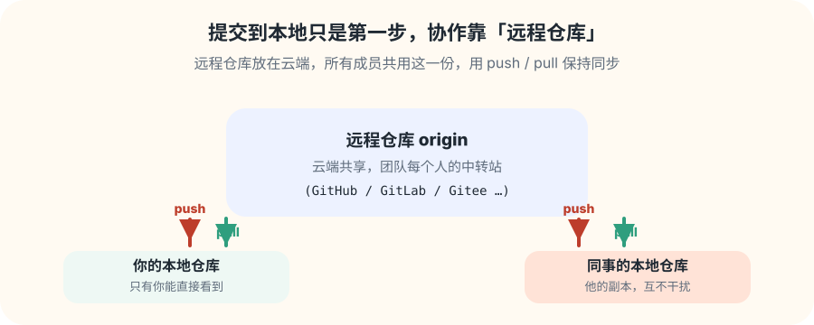
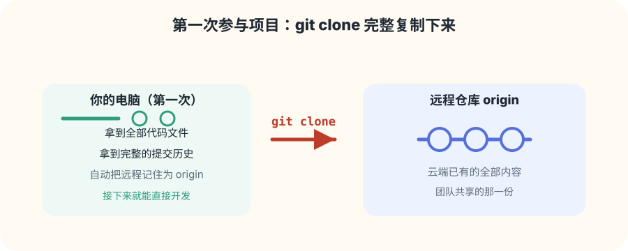
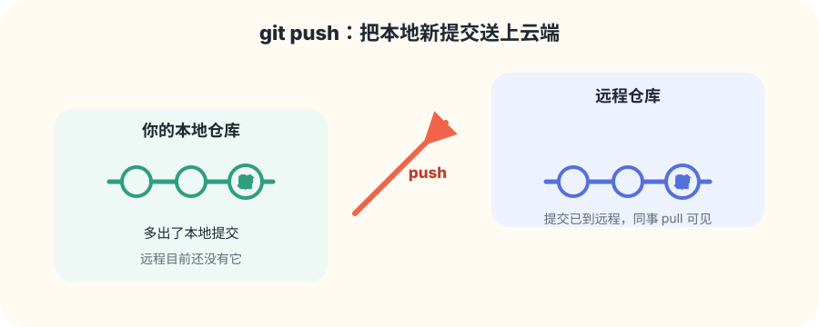
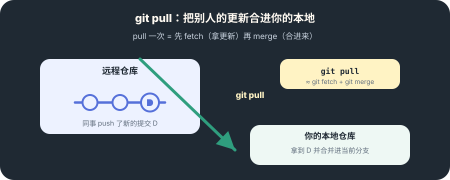
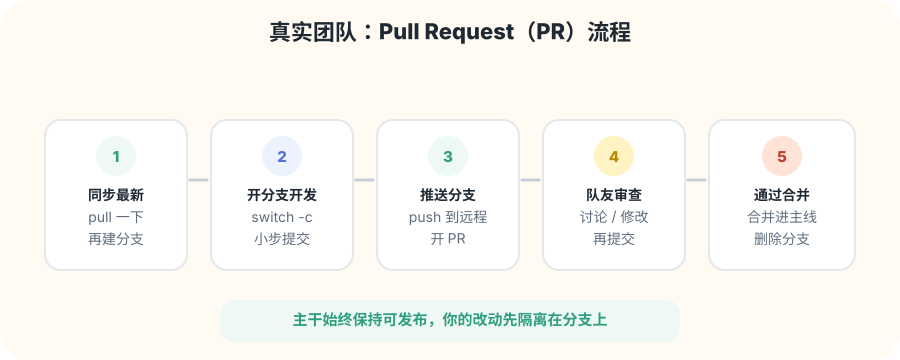

第一次进来：clone
git clone 把远程的代码和历史完整复制到你的电脑，并记住远程叫 origin。
学习路线 · 第 4 步
你一个人用 Git 是存档，一群人用 Git 才是协作。用多张图和循序渐进的小练习，学会 clone、push、pull 和 Pull Request 这套团队流程。
先建立概念

当你提交到本地，别人还看不到。想让别人看到，就得把本地提交推送（push）到远程；想看别人的，就又拉取（pull）回来。这一页按“第一次进来 → 推送 → 拉取 → 团队流程”的顺序带你走通全程。
页面地图
git clone 把远程的代码和历史完整复制到你的电脑，并记住远程叫 origin。
git push 把本地新提交推送到远程，队友才能看到你的成果。
git pull 把别人的新提交拿到本地并合并，大家始终同步。
先分支、后推送、再请求合并，主干始终保持可发布，改动先隔离在分支上。
第 1 步 · 第一次进来

拿到项目地址后运行 git clone 仓库地址，Git 会复制全部代码 + 完整提交历史，并自动把远程记住为 origin。
这意味着你马上拥有和团队一致的完整副本，可以直接开始开发，不需要再手动配置远程。
git clone 地址，之后就进入了熟悉的世界。第 2 步 · 把成果送出去

你在本地 commit 了，但远程还是旧的。运行 git push，本地新提交才会被送上云端。
推完之后，想告诉队友“可以看了”，一句话就够了：“我推送了，拉一下。”
提醒：commit 在本地，改起来很自由；push 之后历史要谨慎改写（见前面的 amend 说明），推出去的东西要负责任。
第 3 步 · 把更新收进来

队友可能早已 push 了新提交。git pull 会先 git fetch（把远程更新下载下来），再 git merge（合进你当前分支）。
开头养成习惯：每次开始写代码前先 pull 一下，避免在你已经落后的旧代码上继续改，这也是减少冲突最有效的一招。
如果两边恰好改了同一个文件的同一处，Git 会停下让你解决冲突——别慌，按分支专题里讲的方法处理即可。
第 4 步 · 团队标准

动手练习
git clone 的地址复制一份到新文件夹。git commit，运行 git push 推送到远程。git pull，观察它拿到你的新提交。